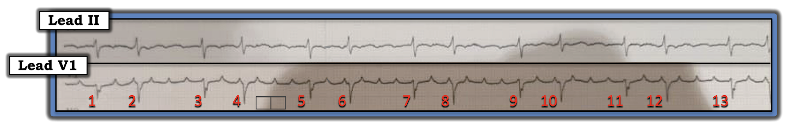
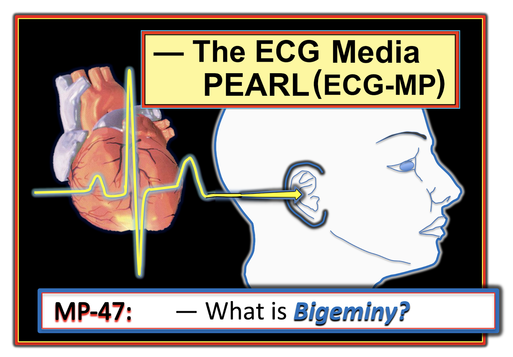
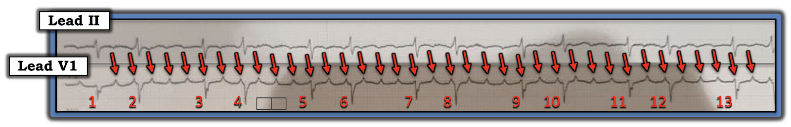
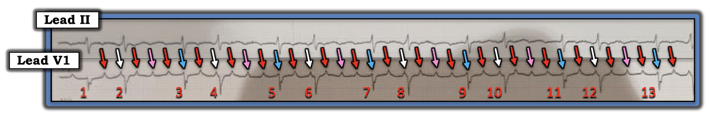
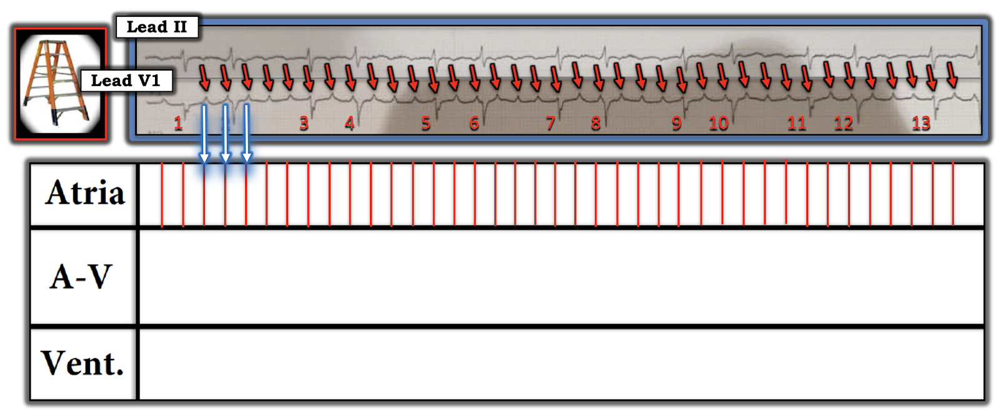
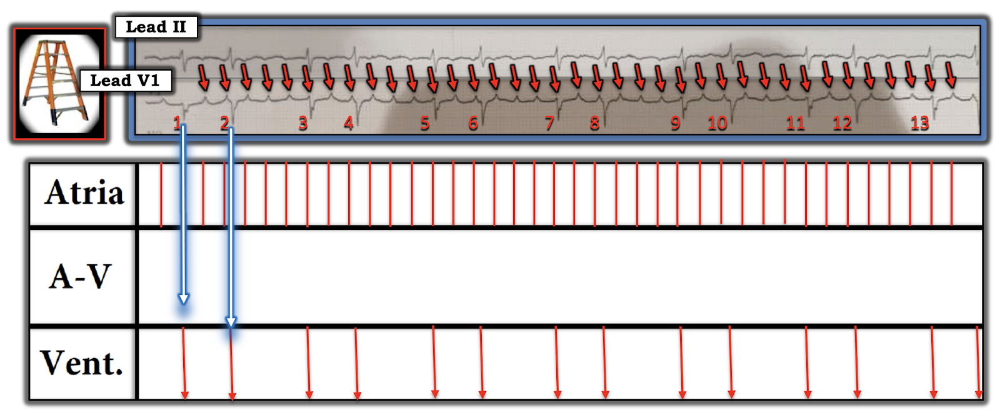
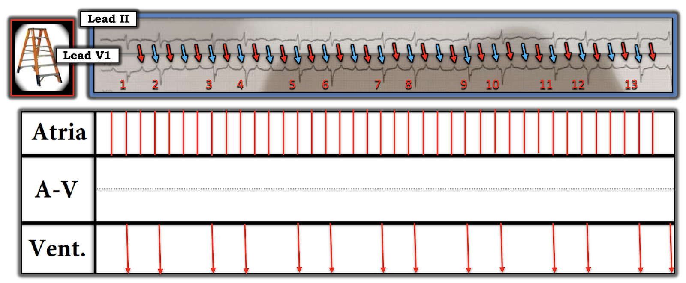
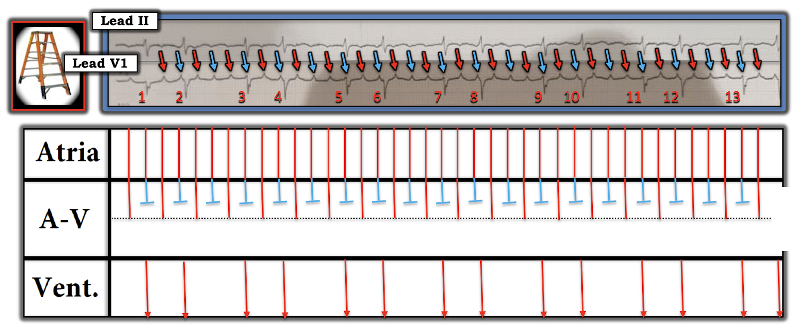
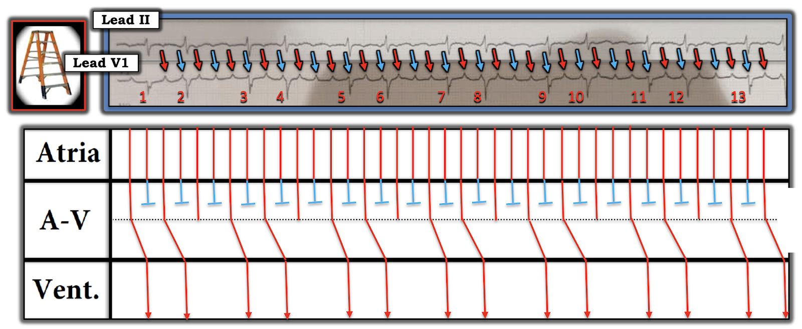

ECG Blog #243 — Vì sao có nhịp theo nhóm?
Ca bệnh hôm nay là về việc đọc dải nhịp 2 chuyển đạo được trình bày trong Hình-1. Không có thông tin lâm sàng.
- TẠI SAO lại có nhịp theo nhóm (group beating)?
- Có blốc AV không?


=======================================
LƯU Ý: Đến đây, một số bạn đọc có thể muốn nghe ECG Audio PEARL dài 5:45 phút trước khi đọc Suy nghĩ của tôi về điện tâm đồ trong Hình-1. Bạn có thể xem lại Suy nghĩ của tôi về bản ghi này vào bất cứ lúc nào (nằm bên dưới ECG MP-47).
=======================================


ECG Media PEARL #47 (5:45 phút Audio) của hôm nay — Ôn lại khái niệm Nhịp Đôi (có thể do nhịp đôi nhĩ hoặc nhịp đôi thất, dẫn truyền Wenckebach — hoặc các nguyên nhân khác).
- LƯU Ý: Audio Pearl hôm nay đã được đăng trước đây trong ECG Blog #232 — nhưng tôi đưa lại vào đây vì nó rất phù hợp với bài hôm nay.
CÁCH TIẾP CẬN TUẦN TỰ CỦA TÔI với CA NÀY:
Phức bộ QRS có vẻ hẹp ở cả hai chuyển đạo theo dõi được trình bày. Giả sử các chuyển đạo khác xác nhận nhận định này — điều đó có nghĩa là nhịp trong Hình-1 là nhịp trên thất!
- Dấu hiệu nổi bật nhất trên bản ghi này là có nhịp theo nhóm dưới dạng nhịp đôi — với các chu kỳ dài-ngắn xen kẽ nhau.
===============================
ĐIỂM THEN CHỐT (PEARL) #1: Chẩn đoán phân biệt của một Nhịp Đôi (bigeminal rhythm) khá giới hạn. Gồm các thực thể sau:
- Nhịp xoang với nhịp đôi nhĩ hoặc nhịp đôi bộ nối (tức là cứ mỗi nhát thứ hai là một PAC hoặc một PJC).
- Nhịp đôi thất (tức là cứ mỗi nhát thứ hai là một PVC).
- Blốc SA ( = blốc Xoang-Nhĩ).
- Blốc AV độ 2 Mobitz I ( = Wenckebach AV) với dẫn truyền AV 3:2.
- Blốc AV độ 2 Mobitz II.
- Rung nhĩ, nhịp nhanh nhĩ hoặc cuồng nhĩ với dẫn truyền Wenckebach.
- Nhịp đôi "thoát–bắt được" (escape-capture) (nhát thứ 1 trong mỗi nhóm là một nhát thoát bộ nối hoặc thoát thất — tiếp theo là một nhát được dẫn truyền).
===============================
GỢI Ý: Tôi thấy rất hữu ích khi mỗi khi gặp một nhịp đôi, tôi luôn ghi nhớ các khả năng trên trong lúc đánh giá nhịp!
===============================
Tiếp tục với Tiến trình Suy luận Tuần tự của tôi:
Về Sóng P trong Hình-1 — Chắc chắn có hoạt động nhĩ, thấy rõ nhất ở chuyển đạo V1. Đến đây, như tôi vẫn thường khuyên — việc đơn giản là đánh dấu sóng P giúp rất nhiều cho việc đánh giá mối liên hệ có thể có giữa hoạt động nhĩ và các phức bộ QRS lân cận (các mũi tên ĐỎ trong Hình-2).
- Các mũi tên ĐỎ trong Hình-2 cho thấy hoạt động nhĩ đều. Dựa vào kích thước của 2 ô lớn mà tôi đã vẽ thêm (giữa nhát #4-5) — tần số nhĩ là ~250/phút.
- Như đã trình bày kỹ trong ECG Blog #229 — hình ảnh "răng cưa" thoai thoải ở chuyển đạo II, kết hợp với tần số nhĩ nhanh, khiến nhiều khả năng nhịp nền là AFlutter (hơn là ATach). Vì vậy, về mặt kỹ thuật — các mũi tên ĐỎ trong Hình-2 đánh dấu "sóng cuồng nhĩ" chứ không phải "sóng P".


CÂU HỎI: Có sóng cuồng nhĩ nào mà ta thấy trong Hình-2 được dẫn truyền xuống thất không?
- GỢI Ý: Có khoảng PR nào lặp lại không?
TRẢ LỜI: Có nhiều manh mối cho ta biết rằng ít nhất một số sóng cuồng nhĩ trong Hình-2 có được dẫn truyền xuống thất. Bao gồm các điểm sau:
- Có nhịp theo nhóm — trong đó thời khoảng của mỗi khoảng R-R ngắn là hằng định — và thời khoảng của mỗi khoảng R-R dài hơn cũng hằng định. Điều này không có nghĩa là không thể có dẫn truyền khi nhịp theo nhóm không đều đặn như trong Hình-2 — mà là để nhấn mạnh rằng việc thấy thời khoảng của các khoảng R-R ngắn-dài xen kẽ chính xác đến mức nào cho ta biết có một tỉ lệ dẫn truyền sóng cuồng nhĩ cố định chắc chắn!
- Có 2 bộ khoảng PR lặp lại trong Hình-2. Để dễ nhận ra điều này — tôi đã chọn màu khác nhau cho từng sóng cuồng nhĩ trong Hình-3.
ĐIỂM THEN CHỐT (PEARL) #2 — Để dễ hiểu điều chúng ta đang tìm kiếm trong Hình-3:
- Do tần số nhĩ nhanh — cả AFlutter lẫn ATach thường biểu hiện dẫn truyền Wenckebach. Chúng ta có thể ngay lập tức nghi ngờ có dẫn truyền Wenckebach ra khỏi nút AV khi có AFlutter hoặc ATach mỗi khi thấy nhịp theo nhóm (như trong Hình-3).
- Khi các nhóm nhát bóp trong AFlutter biểu hiện kiểu nhịp đôi (như trong Hình-3) — thường sẽ có blốc hai tầng khi sóng cuồng nhĩ đi ra khỏi nút AV. Trong những trường hợp như vậy — tỉ lệ dẫn truyền sóng cuồng nhĩ ở tầng nút AV trên thường là 2:1.
- Khi tần số nhĩ nhanh (như trong cả AFlutter lẫn ATach) — những sóng P (hoặc sóng cuồng nhĩ) nằm gần phức bộ QRS kế tiếp thường sẽ không dẫn truyền được. Đó là do hiện tượng gọi là dẫn truyền "ẩn" — trong đó tần số rất nhanh của các xung nhĩ đến nút AV "lấn át" khả năng dẫn truyền bình thường từng xung nhĩ của nút AV. Điều này dẫn đến một sự "chậm trễ" trong thời gian dẫn truyền mà ta không thấy trực tiếp trên điện tâm đồ (vì vậy mới dùng thuật ngữ dẫn truyền "ẩn").
- Trong Hình-3 — các mũi tên TRẮNG đánh dấu hoạt động nhĩ có khoảng PR quá ngắn để dẫn truyền. Hoạt động nhĩ được đánh dấu bằng mũi tên XANH DƯƠNG chắc chắn không thể dẫn truyền — vì nó xảy ra đồng thời với phức bộ QRS, lúc mà thất đang trơ. Điều đó để lại cho ta giả định rằng các mũi tên ĐỎ đứng trước mỗi khoảng R-R ngắn hẳn phải là những sóng được dẫn truyền ( = các mũi tên ĐỎ thấy trước các nhát #2, 4, 6, 8, 10 và 12).
- Vì tỉ lệ dẫn truyền AV ở tầng nút AV trên thường là 2:1 — điều này giả định rằng các sóng cuồng nhĩ xen kẽ có lẽ đang được dẫn truyền ( = các mũi tên ĐỎ thấy ngay sau các nhát #2, 4, 6, 6, 8, 10 và 12). NẾU đúng là như vậy — thì các sóng cuồng nhĩ được đánh dấu bằng mũi tên HỒNG sẽ không đi qua được tầng nút AV trên.
- Điều cốt lõi về Hình-3: Tôi nghi ngờ rằng chỉ những sóng cuồng nhĩ được đánh dấu bằng mũi tên ĐỎ mới được dẫn truyền qua ít nhất là tầng nút AV trên. Nhưng vì số mũi tên ĐỎ nhiều hơn số phức bộ QRS trong Hình-3 — một số sóng cuồng nhĩ này không được dẫn truyền đến tận thất. Việc còn lại — là chúng ta vẽ một giản đồ bậc thang (laddergram) để hỗ trợ cho các giả định này.
- T.B. (P.S.) — NẾU bạn thấy lập luận trên khó theo dõi — XIN đừng nản lòng! Tôi gần như chắc chắn rằng loạt giản đồ bậc thang nối tiếp dưới đây sẽ làm rõ điều gì đang diễn ra.


GIẢN ĐỒ BẬC THANG (LADDERGRAM):
Cách dễ nhất để minh họa cơ chế của nhịp hôm nay — là vẽ một giản đồ bậc thang kèm chú giải từng bước một. Tôi bắt đầu với Hình-4.
- LƯU Ý #1: Để ôn lại những điều Cơ bản về CÁCH đọc (và vẽ) giản đồ bậc thang — Xem ECG Blog #188).
- LƯU Ý #2: Để xem minh họa từng bước một một Ca khác có dẫn truyền Wenckebach và blốc nút AV hai tầng — Xem ECG Blog #226 (bao gồm cả ECG Video trong bài đó).












ĐIỂM CUỐI CÙNG: Thay vì gọi nhịp trong Hình-10 là một dạng "blốc" AV độ 2 nào đó — tốt hơn nên xem nhịp này đơn giản là Cuồng Nhĩ, trong đó tình cờ có sự phân chia dẫn truyền hai tầng ra khỏi nút AV, thường là lành tính (và sinh lý) do tần số nhĩ rất nhanh. Dạng dẫn truyền Wenckebach này không đại diện cho một khiếm khuyết dẫn truyền đặc hiệu nào — và rất có khả năng khi chuyển về nhịp xoang sẽ lại có dẫn truyền AV 1:1.
- Hãy nhớ rằng ngoài blốc AV độ 2 loại Mobitz I — còn có nhiều dạng dẫn truyền Wenckebach khác. Có thể kể ra như: Wenckebach SA — AFlutter, ATach và/hoặc AFib với dẫn truyền Wenckebach — Phó tâm thu (parasystole) với blốc đường ra kiểu Wenckebach — và nhịp bộ nối hoặc nhịp thất với dẫn truyền Wenckebach ngược dòng.
- ĐIỂM THEN CHỐT (PEARL) #3: Hãy nhớ cân nhắc khả năng có dẫn truyền Wenckebach mỗi khi bạn nhận ra nhịp theo nhóm.
==================================
LỜI CẢM ƠN: Tôi xin cảm ơn Yousef Ayyash và Ahmed Abbas (đến từ Amman, Jordan) đã cung cấp ca bệnh và các bản ghi này.
==================================
CÁC BÀI BLOG LIÊN QUAN đến NHỒI MÁU:
- ECG Blog #232 — Ôn lại một ca khác có Nhịp Đôi.
- ECG Blog #186 — Các blốc AV (bao gồm một Audio Pearl dài 4:30 phút về Khi nào nghi ngờ Mobitz I, blốc AV độ 2).
- ECG Blog #188 — Cách đọc (và vẽ) Giản đồ bậc thang.
- ECG Blog #229 — Tại sao AFlutter lại hay bị bỏ sót đến vậy? (bao gồm một Audio Pearl dài 10:00 phút về chẩn đoán AFlutter trên điện tâm đồ — và phân biệt giữa AFlutter với ATach).
- ECG Blog #226 — Phân tích một Ca bệnh phức tạp (bao gồm một ECG Video Pearl dài 11:00 phút hướng dẫn bạn từng bước một cách dựng một giản đồ bậc thang với dẫn truyền Wenckebach và blốc hai tầng trong nút AV).